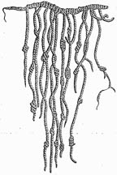
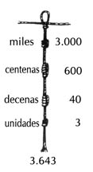
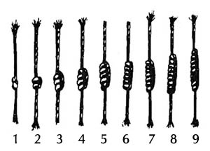

quipu

Cuerdas de diferentes colores con una serie de nudos que servían a los pueblos andinos principalmente como método de contabilidad. Cada cuerda representaba una cosa que se había de contar y los nudos representaban números en un sistema decimal:

Parece que los quipus también se utilizaron para documentar acontecimientos del pasado, pero no se sabe todavía qué método usaban para documentarlos.